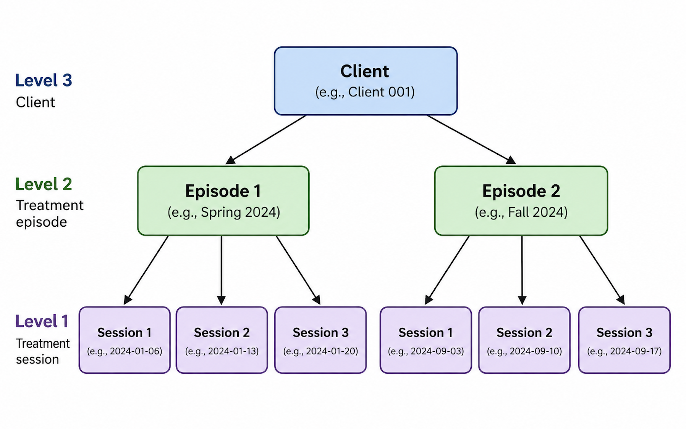

Overview
This article explains how multi-episode psychotherapy data are
structured and introduces the datasets included in
leap.
Structure
Longitudinal psychotherapy data contain repeated session-level
observations nested within clients. A basic premise of leap
is that clients may participate in multiple treatment episodes,
introducing an additional level of nesting: sessions within
episodes, and episodes within clients. This structure is
especially relevant in electronic health records and other archival
datasets that track treatment over extended periods.
The three levels are:
- Session: An individual treatment visit at which an outcome may be measured.
- Episode: A distinct period of treatment containing one or more sessions.
- Client: An individual who participates in one or more treatment episodes.
Figure 1 illustrates this three-level structure.

Datasets
leap includes simulated longitudinal datasets with
sessions nested within treatment episodes and episodes nested within
clients, as illustrated in Figure 1. The datasets vary along two
dimensions: design, which determines the number of
episodes and sessions, and scenario type, which
determines variability and patterns of change.
Design
In a balanced design, all clients contribute the same number of episodes, and all episodes contain the same number of sessions. This simplified structure is useful for comparing statistical models and evaluating their performance.
In an unbalanced design, clients contribute different numbers of episodes and sessions. This structure more closely resembles routine treatment records, where clients differ in treatment duration and how often they return for additional care.
Scenario type
Stochastic scenarios vary the amount of between-client and between-episode variability in treatment trajectories. They are useful for examining how different sources of variation affect episode-based analyses.
Clinical scenarios simulate predefined patterns of change within and between episodes. They illustrate how treatment response and return to care may differ across successive episodes.
Together, these datasets provide controlled examples for exploring
leap functions and comparing analytic approaches across
different data structures and treatment trajectories.
Diminishing therapeutic response
Clients improve during treatment, but their improvement is smaller in episodes following the first episode.
Deteriorating therapeutic response
Clients’ outcomes worsen during treatment, representing deterioration within episodes rather than improvement.
Relapse and response
Clients’ outcomes worsen between episodes, but clients improve again when they return to treatment.
Efficient return and response
Clients’ outcomes worsen between episodes, but clients improve in fewer sessions when they return to treatment.
Together, these datasets provide controlled examples for exploring
leap functions and comparing analytic approaches across
different data structures and patterns of change.
Summary
Readers interested in learning more about longitudinal data analysis of psychotherapy can find guides in the Research Foundations article.